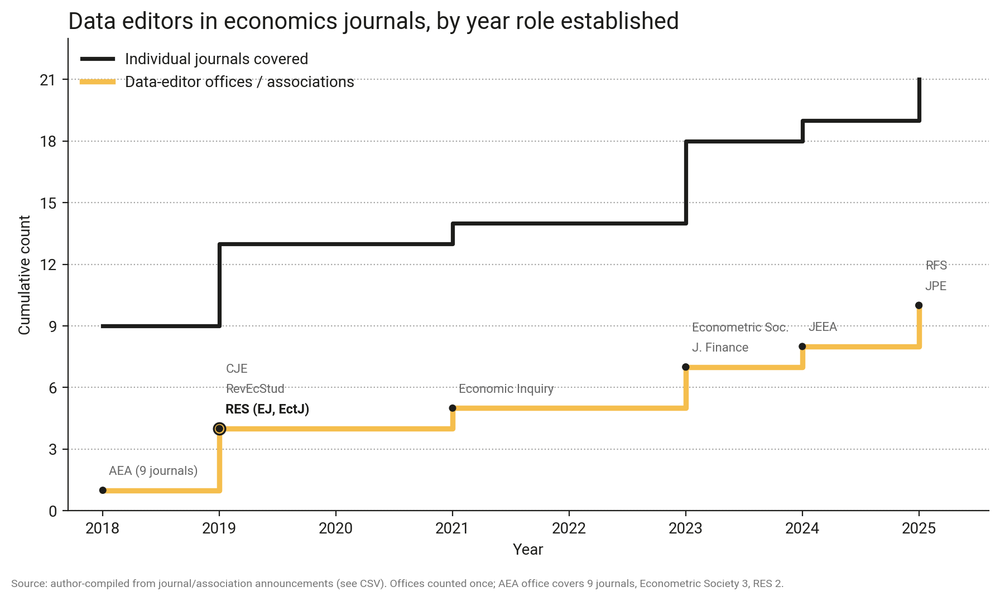
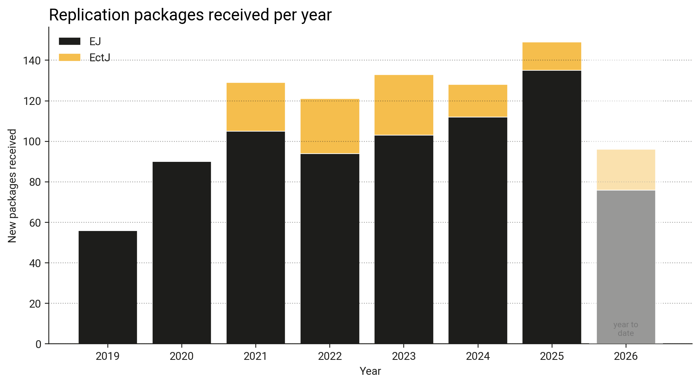
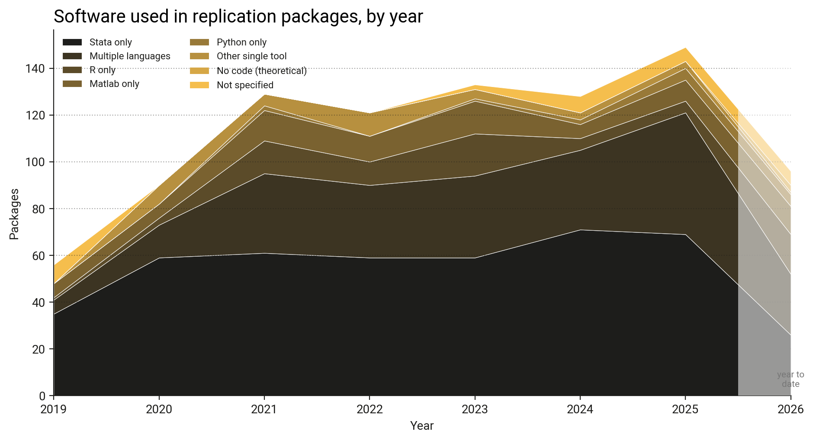
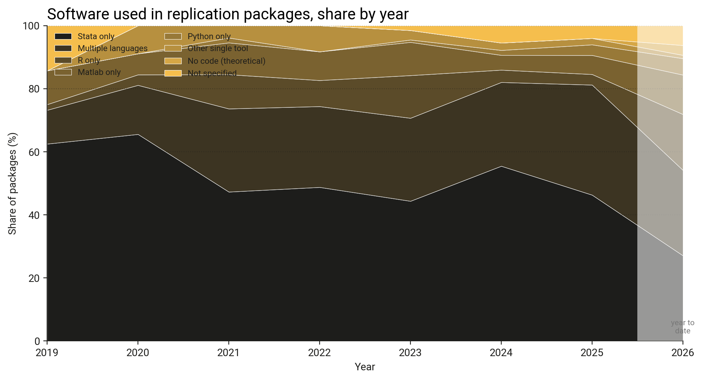
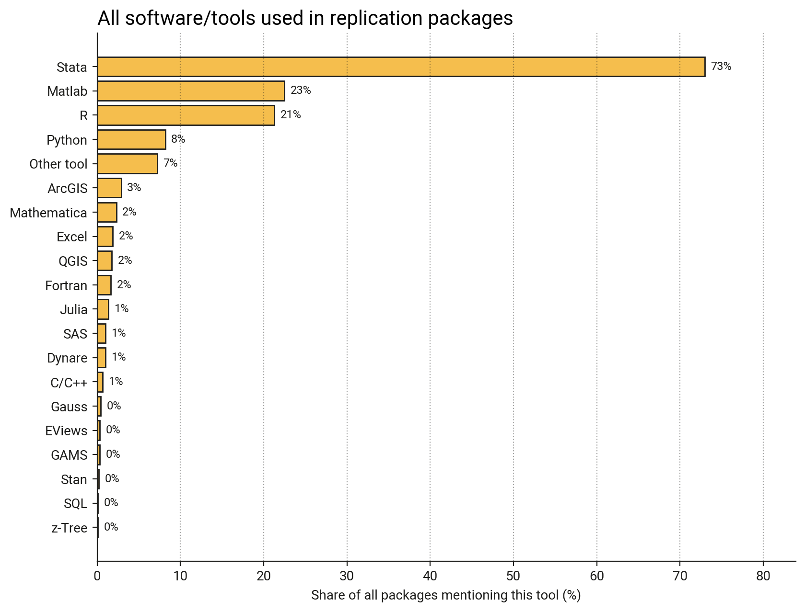
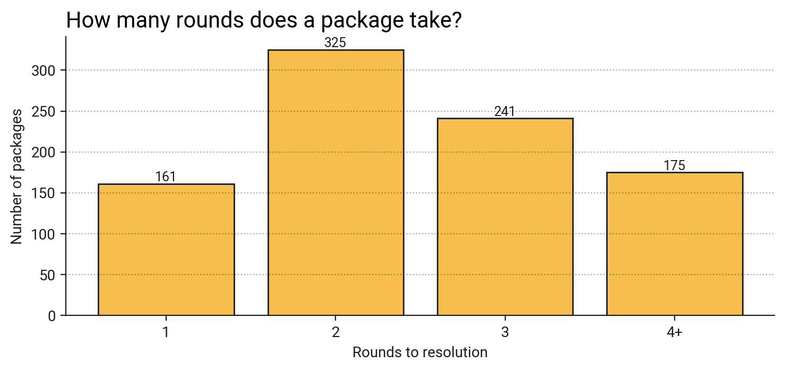
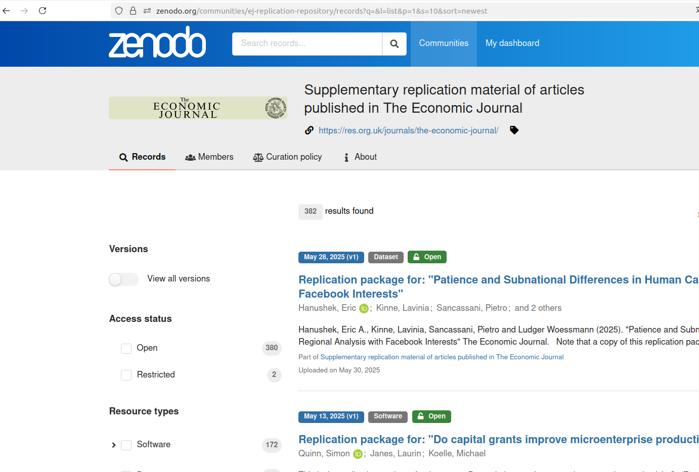

Experiences of Past and Current RES Data Editors
IAE-CSIC & Barcelona School of Economics · Econometric Society Data Editor (RES Data Editor, 2019–2023)
University of Turin & SciencesPo · JPE Data Editor (RES Data Editor, 2023–2025)
University of Exeter & Universidad de Chile · RES Data Editor (2025–)
8 July, 2026
The Past
Replicability in Economics: Experiences of RES Data Editors
Damian Clarke
The Present
Best Practices in Replication
Joan Llull
The Future
AI in Research Workflows
Florian Oswald
We draw on:

2017
EctJ begins early replication-package checks
Dec 2019
Joan Llull appointed RES’s first Data Editor
Jul 2020
EJ replication packages all housed on Zenodo
Dec 2022
RES co-founds DCAS
Jun 2023
Florian Oswald becomes RES Data Editor
Jul 2025
Damian Clarke becomes RES Data Editor
Jan 2026
EctJ replication packages all on Zenodo





